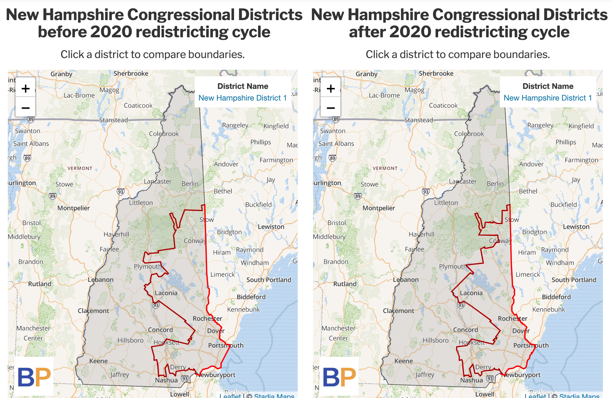
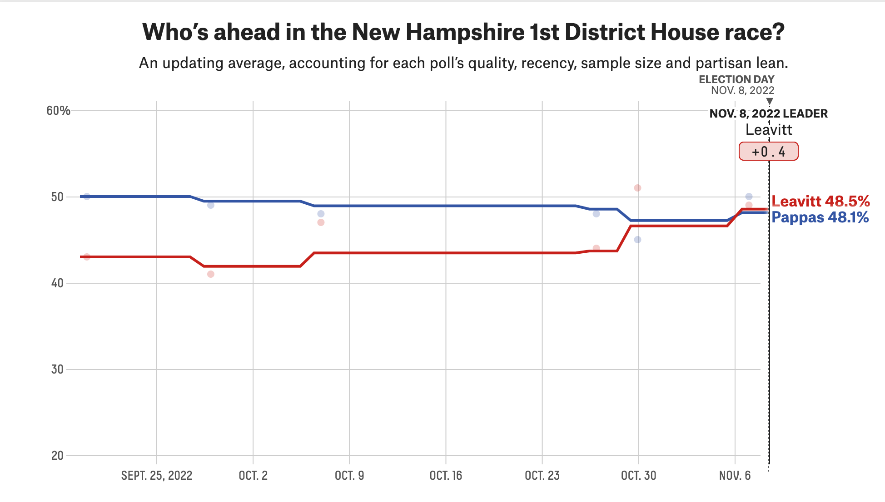
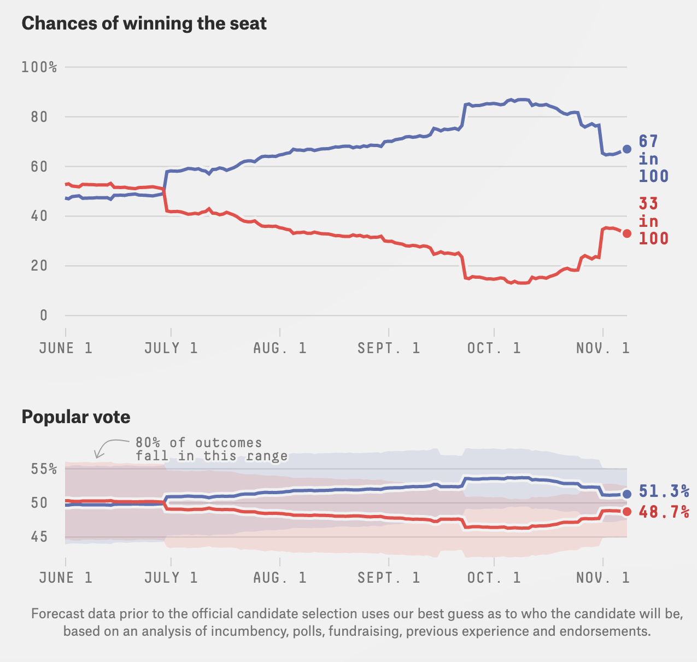
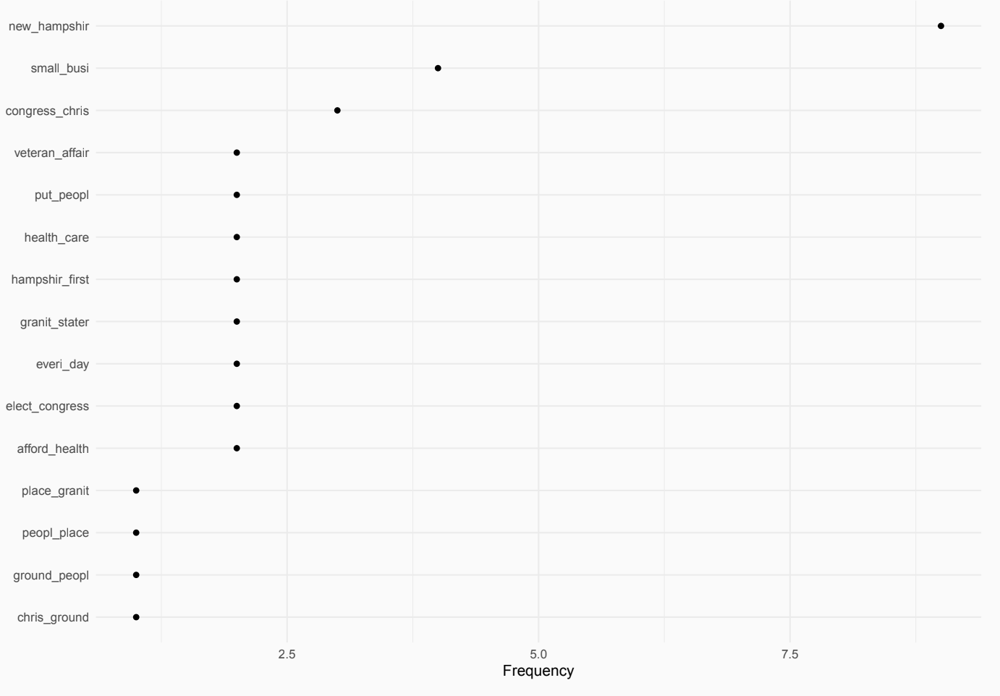

on
Post Election Campaign Narrative
NH-01 Post Election Campaign Narrative
The House district I chose to follow this semester was NH-01. I chose this district because it’s just outside of my hometown and was poised to hold both a competitive Republican primary as well as a competitive general election. Additionally, I had interned in the office of the Incumbent Representative the summer after my freshman year so I was already familiar with the makeup of the district as well as the specific issues that mattered most to the voters in NH-01.
NH-01 Background and Demographics
NH-01 is one of two congressional districts in the state of New Hampshire and covers the eastern half of the state. The district includes the seacoast region as well as the city of Manchester, the largest city in the state. The district is considered highly competitive, switching parties five times in 15 years from 2003 to 2018 when the current Congressman, Chris Pappas, was elected. Pappas was narrowly re-elected in 2020 and now again in 2022. As of 2020, the district has a population of 684k, a median age of 42.2, and a median household income of 78,400 dollars. This is above the national median income of $67,521, and ranks 80th by median household income. The district is homogenous with a 90% white population. The other 10% of the population demographic breakdowns are: Asian (2.76%), White (Hispanic) (2.42%), Two+ (Non-Hispanic) (2.22%), and Black or African American (Non-Hispanic) (1.53%).

Unlike many of the districts we looked at this semester, NH-01 faced relatively minimal changes due to redistricting. New Hampshire was the last state to finalize their congressional map ahead of the 2022 elections after disagreements between the state’s Republican held legislature and the Republican Governor, Chris Sununu led to a standstill in the normal process. After failing to approve new maps, a special master was appointed to draw the new districts through a “least change” approach and the new maps were approved by the state supreme court on May 31st 2022. The new maps moved five towns from NH-01 to NH-02, keeping both of NH’s House seats competitive with a slight Democratic lean.
Chris Pappas was the incumbent Democrat in the NH-01 race. Pappas was first elected during an open race in 2018 defeating Republican nominee Eddie Edwards 53% to 45%. In doing so, Pappas became NH’s first first openly gay member of Congress. He was re-elected in 2020 defeating challenger Matt Mowers 51% to 46%. Prior to his 2018 election, Pappas served on the New Hampshire Executive Council and in the state House of Representatives. During his campaigns, Pappas has consistently emphasized his experience as a small business owner, as well as, his record fighting for affordable healthcare, combating the opioid crisis, lowering oil and prescription drug costs.
Karoline Leavitt defeated several opponents in a wide-open primary to take on Pappas in the general election. Leavitt entered the race early, declaring her candidacy in July of 2021. Her primary opponents included the more moderate Matt Mowers who had taken on Pappas in 2020, along with other challengers; Gale Huff Brown, Russel Prescott, and Tim Baxter. At just 25 years old, Leavitt would have been one of the youngest members of Congress ever elected. Leavitt’s campaign focused heavily on her experience working in the Trump White House as a presidential writer and assistant press secretary. Leavitt was viewed as an extreme, far-right candidate due to her stance as a staunch denier of the 2020 presidential election results. In her messaging Leavitt focused on securing the border, supporting police, banning critical race theory, and combating inflation.
##Predictions
In advance of the election, my model predicted that incumbent Democrat Chris Pappas would win the district with 50.24%. On election day, FiveThirtyEight’s polling average gave Leavitt a slight lead over Pappas, polling at 48.5% and 48.1% respectively as Leavitt polled strongly in several key polls in the week leading up to election day.

However, FiveThirtyEight’s final forecast for the district still gave Pappas the edge predicting a popular vote split of 51.3% to 48.7%. Their probabilistic model showed Pappas winning in 67% of simulated elections.

While most expert ratings considered the race a toss-up with a slight edge to Pappas, RealClearPolitics moved the race from “Toss-up” to “leans GOP” just two weeks before the election casting more doubt on the election’s outcome.
#Outcome
Chris Pappas won 54.0% of the vote with 166,852 votes, as compared to the Republican candidate Karoline Leavitt’s 46.0% and 141,899 votes. This vote margin was much wider than polls and forecasts had predicted leading up to the election as Pappas finished with a commanding lead over Leavitt. While the models mentioned above predicted a popular vote share margin between <0.5% and 2.6%, the actual margin was 8 points.
Pappas was able to structure this commanding lead by performing similarly across that state as he did in 2020. Pappas added one point to his win margin when compared with the result from 2020 (53% to 45%). This is a strong showing given that the electoral climate for Democrats (the economy, party of the president, etc) is Significantly worse in 2022 than it was in 2020. Pappas expanded his vote share in 55 towns while only performing worse in 12 towns (several of which are very small. <100 voters).
Pappas’ largest gains were in the college town of Durham NH, home to the University of New Hampshire. UNH is home to over 15,000 students and has been the target of voter suppression efforts from the NH state GOP. Between 2020 and 2022, Pappas expanded his lead by 11 percentage points. One of the major narratives coming out of the midterms was the idea that young voters largely saved Democrats from what could have been a “red wave.” The margin in Durham certainly supports this notion.
Campaign Dynamics
Chris Pappas
Chris Pappas was first elected to represent NH-01 in 2018 after Carol Shea-Porter (D) retired leaving the seat empty. In 2018 he defeated GOP candidate Eddie Edwards to represent NH’s first district. Pappas became the first openly gay Congressman to represent the state of New Hampshire. The top five issues listed on Pappas’ campaign website in order are: lowering costs for families, working across the aisle, standing up for reproductive health, making healthcare more accessible, and Supporting small businesses. In his ‘about’ section, Pappas emphasized his record of work in congress as a member of the Veterans’ Affairs Committee and the Transportation and Infrastructure Committee. Especially prevalent in his campaign messaging is an emphasis on deep New Hampshire roots. Pappas cites that he is a “proud product of Manchester public schools” and notes his experience running his family’s “100 year old business, the Puritan Backroom Restaurant.”
Media coverage can be difficult to acquire for NH candidates running for office. There is only one major News station (WMUR) and a handful of print outlets. When there is media coverage, it tends to be clumped around large events such as the Nov. 3rd debate, new polls, or interviews (most of which are conducted through series with each candidate). Media coverage was particularly difficult to secure in 2022 due to the highly competitive senate race between incumbent Democrat Maggie Hassan and Republican Challenger Don Bolduc which took up a significant portion of midterm coverage in New Hampshire outlets. Largely, Pappas played it safe as a quiet but reliable candidate. He did not go out of his way to attain news coverage and instead emphasized his steady approach to fighting for the Granite State.
Messaging directly from the campaign, observed through press releases, was focused on painting Pappas as an independent thinker and bipartisan politician. While only a limited number of press releases were posted to the Congressman’s campaign website, those that are available tout his bipartisan appeal such as a “coalition with Republicans, former Republicans, and Independents” in support of his reelection bid.
Chris Pappas’ ground game was run entirely by “Organize NH,” the coordinated campaign effort for NH’s Democratic candidates. This strategy aims to maximize outreach for all Democratic candidates, having volunteers advocate for Democrats at each level of government during the midterm elections.
Karoline Leavitt
Karoline Leavitt was one of the first GOP candidates to announce her intention to run for the NH-01 GOP nomination on July 19, 2021. Particularly in the earlier days of the campaign, Leavitt went out of her way to connect herself to former President Trump. She heavily emphasized her experience working in the Trump White House and her campaign website features photos of her working alongside him. She also makes similar populist appeals stating that she “fought against the biased mainstream media, and proudly helped message President Trump’s America First agenda.” She was also a noted election-denier.
The top five issues listed by Leavitt on her campaign website are: lower taxes and less regulation, law and order, strong borders, the second amendment, and election security. Similar to Pappas, Leavitt made her New Hampshire roots the core of her campaign. Her campaign website prominently features her experience working at her family businesses as well as her time going to college in NH at St. Anselm.
Leavitt faced many of the same media coverage challenges as Chris Pappas while running for Congress. She received similar coverage around large events such as the Nov. 3rd debate, new polls, or interviews (most of which are conducted through series with each candidate). Leavitt did get slightly more national coverage than Pappas due to her young age and Trumpy appeals.
Explaining Deviations From Our Forecasts
If we apply Lynn Vavreck’s framework of campaigning, Pappas should be running an insurgent campaign given his status as an incumbent given the poor economic conditions this election. We should expect Pappas to highlight other issues instead of the economy in his messaging. The results from Pappas’ platform are mixed. Popular insurgent issues such as Veterans issues, healthcare, and women’s health feature prominently. However, the top issue on his site is lowering costs for families which is a clear economic factor. The chart below shows the frequency of various terms on Pappas’ about page showing his emphasis on veterans issues and small businesses.

Leavitt similarly exhibits mixed strategies when considering Vavreck’s methodology. As the challenger in a bad economy we should expect Leavitt to run a “clarifying campaign” focusing on economic issues. While lowering taxes featured prominently, her campaign truly centered being tough on crime and immigration as well as election denial. While neither campaign perfectly executed the strategy suggested by Vavreck, Pappas was more inline with the advisable message which may explain his electoral success.
There is of course the added question in the 2022 midterm election cycle about the applicability of Vavreck’s methodology. The economy of the 2022 election cycle is host to some economic puzzles that complicate our ability to app;y traditionally reliable fundamentals model. For instance, while inflation is high and GDP is down, unemployment is extremely low. These seeming inconsistencies may complicate the applicability of Vavreck’s findings to 2022.
References
Lynn Vavreck. The message matters: the economy and presidential campaigns. Princeton University Press, 2009.